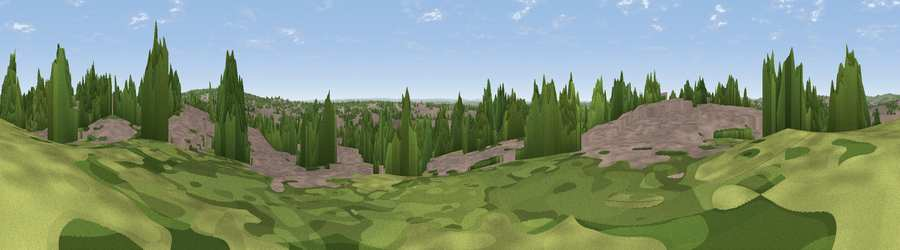

Viewpoint near Willesden
#33034 in England · top 19% of its area beats it · near WillesdenWhere it is
The exact computed spot (TQ 22375 86225). Click the marker for map links.
The view, rendered

A 360° render of this exact spot computed from the terrain model, tree cover and land cover — summer colours, afternoon light, calibrated against photographs of famous viewpoints. Real trees, hedges and buildings will differ in detail.
The panorama
Grey silhouette: terrain skyline in each direction (720 bearings, Earth curvature and refraction included). Dashed green: skyline with trees (+15 m) and buildings (+8 m) as obstacles. Blue strip: how far the ground is visible on each bearing.
Where the view opens
Wedge length = distance to the farthest visible ground on that bearing (vegetation-aware). Rings at 10, 25 and 50 km.
What fills the view
56% built-up · 31% woodland · 12% grassland ·
Angular shares of the visible panorama (visual magnitude), not map area. Landscape diversity 0.43 (0–1 Shannon).
Key numbers
More beautiful places nearby
The staircase of upgrades: each row has a higher view potential than everything closer. Driving times are estimates from straight-line distance, calibrated against real road routing — check an actual route before setting out.
| Place | Direction | Drive | Score |
|---|---|---|---|
| Parliament Hill | E · 5 km | ~12 min | 48.4 |
| Viewpoint near East Finchley | E · 7 km | ~14 min | 51.0 |
| Harrow on the Hill | WNW · 7 km | ~15 min | 60.7 |
| Viewpoint near Chaldon | SSE · 33 km | ~51 min | 66.7 |
| Viewpoint near Lower Kingswood | S · 34 km | ~52 min | 67.8 |
| Box Hill | S · 35 km | ~53 min | 70.4 |
| Viewpoint near Box Hill Village | S · 35 km | ~53 min | 71.0 |
| Beacon Hill | NW · 40 km | ~60 min | 74.1 |
51.56164, -0.23600 · source: screening · position refined by local search. Computed location — check access rights before visiting.